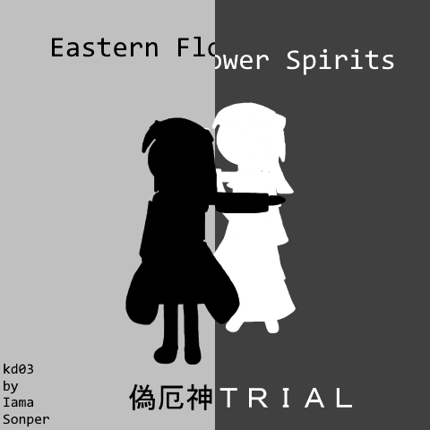

Eastern Flower Spirits ~ 偽厄神 (2024)

download
a bullet hell shooting game and the 3rd kanas dream game
still on the trial version , so it only has the first 3 stages
you dodge bullets while shooting enemies down and collecting the items they drop
every stage will contain a boss at the end , and most a midboss at some point before the boss
a giant plant appears in yume no genjitsu , making the protagonists [kana , pikuseru and shinbokasha] investigate
controls
- arrows : move
- z : shoot , skip dialogue , accept
- x : bomb, cancel
- shift : focus mode
- escape : pause
song list
- Plant of an Antarakalpa
- Forgetfulness Forest
- Neat Irrelevancy ~ 來、今
- Raijin City ~冬~
- Embodiment of Ice ~ 凍人形
- BGM: 火山岩の合奏
- ビーベリー、ビルベリー
- Game Over
updates
- (2023-10-12) v011 : minor difficulty , visual changes and fixes